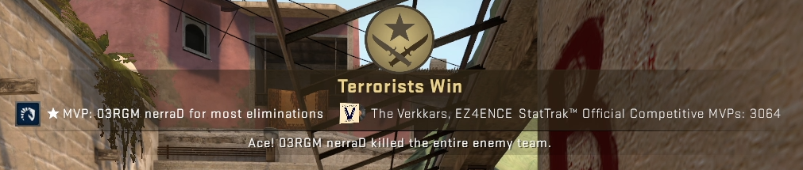

Game Modes
Other than the main game mode discussed previously, there are still a plethora of game modes provided as well.
Casual
This mode differs slightly from the normal competitive mode, that is instead of 5 players vs 5 players, it is 10v10. It is mainly used to be played for fun and does not affect the rank that the players have.
Armor and helmet are provided for free every round, and a defuse kit as well. Instead of 30 rounds, there is 16 rounds where the first team to win 9 rounds wins.
Wingman
A mode blending Casual and Competitive modes together, it is a 2v2 mode where armor and kits need to be bought, matches are shorter, similar to Casual mode where first to 9 rounds wins.
More strategically easier and relaxing but competitive nonetheless, it affects players Wingman rank but not the Competitive Ranks.
Deathmatch
A staple of major first-person shooters, you are placed in a map with 10 minutes with 1 objective, shoot everything that moves.
Weapons can be freely chosen and the player with the highest score after 10 minutes wins. It is here that most players choose to warmup before heading into a ranked match so that they can aim better.
Danger Zone
An attempt from Valve to cash in at the "Battle Royale" genre hype in 2017 and 2018. Players are put in a map far larger than normal maps in other game modes to fight to be the last man standing.
Weapons and equipment are not given at the start, players must search and gather equipment and weapons that can help them win the game. Can be played with a teammate to form a group of 2 or can play it solo.
War Games
A game mode that contains other game modes that are mainly played for fun, such as Arms Race, where players use different weapons to get kills until all weapons has been used which will be the winner.
On top of that, Demolition is similar to defusal but every kill you get, you will get a extra piece of utility. Flying Scoutsman is by using the SG 553, or more commonly known as the scout to kill opponents, the catch is that there is low gravity and the gun's accuracy is at a constant 100%. Finally there is retakes where CTs retake a bombsite with the bomb planted, just as the Competitive game mode.
Maps
Maps are an integral part of the game. Simple in nature, complex in practice, it is paramount that teams understand it inside and out to gain the upper hand against enemy teams.
There are 6 types of maps included in the game:
- Active Duty Defusals
- Mirage
- Inferno
- Overpass
- Vertigo
- Nuke
- Ancient
- Dust II
- Reserve Duty Defusals
- Train
- Cache
- Basalt
- Hostage Maps
- Agency
- Office
- Insertion II
- Wingman Maps
- Ravine
- Extraction
- Vertigo
- Inferno
- Overpass
- Cobblestone
- Train
- Nuke
- Shortdust
- Lake
- War Games Maps
- Lake
- Baggage
- Safehouse
- St. Marc
- Shoots
- Lunacy
- Monastery
- Sugarcane
- Bank
- Shortdust
- Dizzy
- Bank
- Danger Zone Maps
- County
- Sirocco
- Blacksite
Slang
From it's long and winding history, no doubt Counter-Strike players has developed a language of their own, either to simplify communication or just for laughs, this is a list of common slang said by many players.
- 1g
- The short form name of former pro player turned streamer, Summit1g where he accidentally lost a round due to him running to his own molotov, causing him to die by his own hand, in the end resulting in his team losing the whole match. So whenever someone dies to their own molotov, instinctively we will call out "1g".
- 200IQ
- A player that pulled off a smart play.
- Ace
- Where a player gets all 5 kills in the round.

- AFK
- Away From Keyboard. Usually denotes where a player has not moved in a long period.
- Aimbot
- A hacking program that allows players to shoot at enemies without controlling the game. Not allowed in the game.
- Anti-Flash
- Where a player looks at a wall or at the floor to avoid being blinded by a flashbang.
- AWPer
- Refers to a player well skilled in using the AWP.
- Bait
- Where a player uses a teammate to "bait" the enemy into shooting the teammate, unknown of the second player, giving the team the advantage.
- Bhop(Bunny Hop)
- Where a player exploits the mechanics of the game whereby you gain higher speed by jumping in a specific way compared to running normally.
- Boost
- Where a player jumps on their teammate's head, looking over an elevated position.
- Buff
- Refers to a increase in performance or value to a certain weapon or equipment. Opposite of nerf.
- Crabwalk
- Where a player walks around the map while crouching, mimicking a crab. Usually done as a joke.
- Clutch
- Where a player faces a team by their own, sometimes denoted as 1vX(X being enemies remaining)
- Clutch or Kick
- A joke about if a player fails to clutch, the team will kick them out the game.
- Deagle
- Short form for Desert Eagle.
- Dink
- Where a player hits a headshot but not killing the enemy, presumed that the enemy is therefore low in Health Points(HP).
- Drop
- Where a player requests a teammate for a weapon as they don't have the money to buy the weapon.
- Entries
- Where a T player enters a bombsite and gets kills.
- Exec(Execute)
- Where a T team attacks a bombsite with coordinated utility and entrying.
- Exits
- Where a CT player gets a kill on a T as the bomb explodes, hurting the opposite's team economy.
- EZ(Easy)
- A term to signify something as easy, usually used as a joke or to taunt opponents.
- Fake
- Where a T team attacks a bombsite with coordinated utility but attacks the other bombsite through deception.
- Flick
- Where a player "flicks" his mouse quickly to kill an enemy.
- Frag
- Similar to "kills"
- (Top/Bottom) Frag
- Where a player has the highest/least kills respectively.
- Gamble Stack
- Where a CT team puts all players in 1 bombsite, hoping they go to that exact bombsite, knowing full well there is a chance the enemy will go to that other bombsite.
- GG(Good Game)
- Where players type or say after a game to signify sportsmanship.
- Glass Cannon
- Where a player uses a AWP without armor, as the AWP is quite expensive yet powerfull. Used when the economy is poor.
- GLHF(Good Luck Have Fun)/HF(Have Fun)
- Typed or spoken in the start of the game to signify sportsmanship.
- Grief
- Where a player intentionally loses a game.
- Hand Cannon
- Referring to the Desert Eagle pistol due to its high damage and high skill ceiling.
- IGL(In Game Leader)
- Responsible to call strategies or strats to the team.
- Juan Deag(One Deag)
- Where a player shoots an enemy in the head just by using 1 bullet, usually using a Desert Eagle. See also "One Tap"
- Kobe
- Spoken AFTER getting a kill by the HE grenade. Not to be confused by "Yeet".
- KZ
- Refers to a type of map where players can train their movement in game.
- Legged
- Spoken after hitting an enemy in the leg with an AWP, denoting the enemy is low on HP.
- Lit
- Spoken after hitting an enemy to the point that their HP is low, low enough that a single bullet from anything can kill them. See also "One HP"
- Molly
- Refers to a Molotov or an Incendiary Grenade.
- Nade
- Refers to a HE Grenade.
- Nade Stack
- Refers to a bunch of HE Grenades thrown to a specific area in hopes that it will get a kill.
- Nerf
- Refers to a decrease in performance or value to a certain weapon or equipment. Opposite of buff.
- No Scope
- Killing an enemy by using SSG 08 or AWP without scoping in.
- Ninja/Ninja Defuse
- Refers to a sneaky CT defusing the bomb under the noses of the T side.
- NS(Nice Shot)
- Typed or spoken after receiveing a nice shot.
- NT(Nice Try)
- Typed or spoken after your teammate fails a clutch or fails at a situation.
- N1(Nice One)
- Typed or spoken after seeing something worthy of commendation.
- One Tap
- Spoken after hitting a headshot with just 1 bullet shot. Usually with the AK-47 or Desert Eagle.
- One Way
- Denotes a smoke where you can see the enemy but they can't see you and vice versa.
- Pop Flash
- A flashbang thrown in such a way that the recipient has no time to react and avoid the flashbang.
- Pre-Fire
- Prematurely firing the weapon to the suspected angle of the enemy.
- Queue/Q
- Queueing for a match by matchmaking.
- Rotate
- An action in which a team goes from a bombsite to another bombsite.
- Rush
- An action where a team charges into a bombsite immediately at the start of a round. Common usages is "Rush B"
- Save
- An action where the surviving CTs save their weapons after knowing the round is lost to avoid economic downfall.
- Smurf
- Where a player uses a account lower ranked than their actual rank to play against lower ranked players. Typicaly unpopular.
- Tagged
- Similar to "Lit".
- Tilt
- Where a player is angry about the outcome of the game until it affects performance.
- TK(Team Kill)
- An action in which a player accidentally or intentionally kills a teammate.
- Throw
- Similar to "Grief"
- Toggle
- Usually denotes a player has turned on hacks, like the toggle of a switch.
- VAC(Valve Anti Cheat)
- Typically spoken after seeing a player hit a unnatural shot.
- Volvo
- Nickname for Valve, the developer of the game.
- Walling
- Denotes a player can see through walls with the help of cheating software.
- Wall Bang
- Describes bullets going through a penetrateable surface to the other side and killing an enemy.
- Whiff
- Denotes a player has missed an easy shot.
- Yeet
- Spoken BEFORE throwing the HE grenade. Not to be confused by "Kobe".